Members must place the request for a new Leased Line on ENIT
Once the request is successfully processed, exchange shall send NOC on the email id provided in the request
Once after receiving NOC from NSE, member must raise the feasibility request with respective service provider
Member needs to co-ordinate for link delivery with the respective service provider and has to inform Sify NOC accordingly
Once the link is through Sify will provide the WAN, LAN, TAP IP Address details to members
Self-service customer config will shared to member to do the configuration by their own
NOC team will do the POP side configuration alone
Example screenshot:
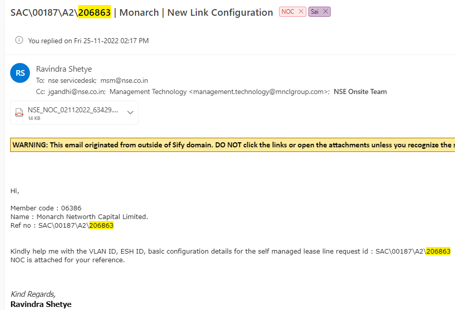
Suppor team Email ID: nse.sifynoc@sifycorp.com
Capitive POP:
Mumbai- Kurla
Mumbai- Fort
Kolkata- Ultadanga
Delhi- Jeevan vihar
Putty session:
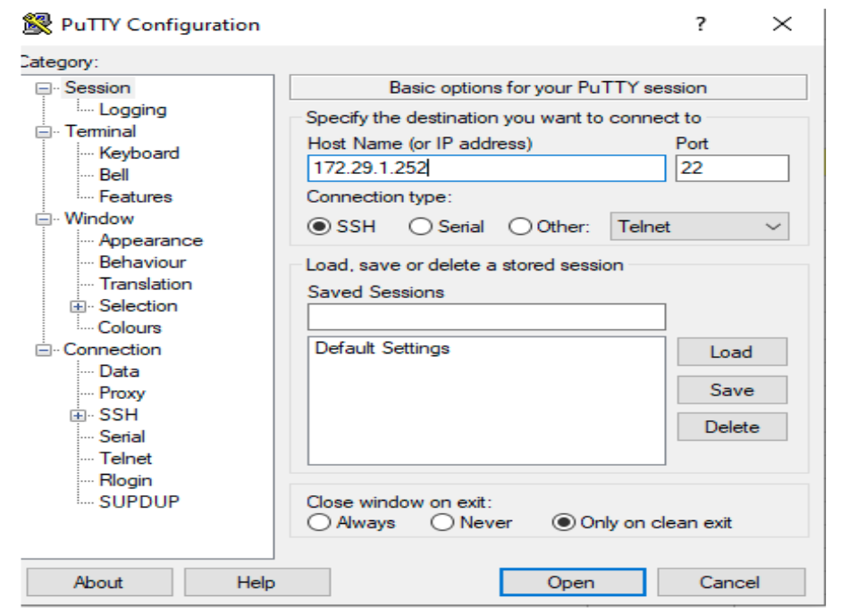
Open putty >>>>> 172.29.1.252 >>>>
Step 1: Login to putty with sever ip
Step 2: Login to sify server
username: sifyvpnuser
password: XXXXXX
Step 3: Login to nsenoc server
[sifyvpnuser@sifyvpn_blr ~]$ ssh nsenoc@1.6.36.171
Enter password => password: XXXXXX
Step 4: Login to POP router (Router IP )
[nsenoc@NSE-DC-CA-SC-01 ~]$ ssh empy id@100.96.214.6 (Any captive pop device ip)
Enter password => password: XXXXXX
Step 5: Check the link status
sh ip bgp sum | i WAN CE IP
How to identify the link down or up:
Showing only uptime:
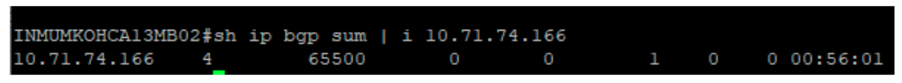
00:44:23
Showing uptime and Active or Idle:
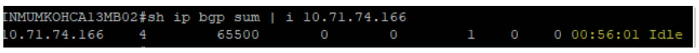
00:44:23 Idle, 00:44:23 Active
If link is down then raise the ticket for link down
Service now >> Telco sify >> Raise Ticket >> Link down
We can use this command to know which one is bso port and Lan port
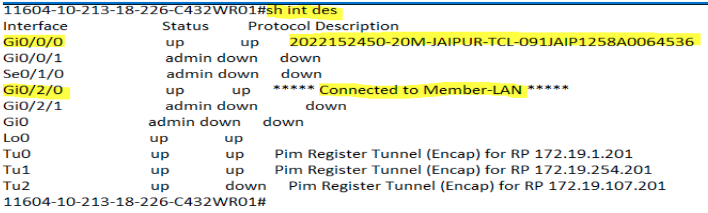
Step 1: Login to customer router
Step 2. Enter command
(96752-10-222-20-226-C432NR01#ping 10.71.65.90 re 1000 size 1500 df-bit)
How to check CRC error:
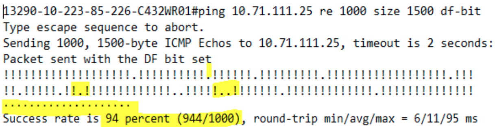
Customer facing any slowness issue or missing packets then clear CRC errors
(6752-10-222-20-226-C432NR01#clear count
Below is the command used To know the Packet are moving or not
(6752-10-222-20-226-C432NR01#sh ip mroute sum
Below is the command used To know the Packet are moving or not
This commnad is used multicast also working or not
(6752-10-222-20-226-C432NR01#sh ip mroute count
This commnad is used To know the Tap sever reachability
(6752-10-222-20-226-C432NR01#ping Tap ip
(6752-10-222-20-226-C432NR01#sh ip pim nei
POP End router:
Check POP end bgp - Uptime Minimum 5 hours
sh bgp sum | i (WAN CE IP)
Check pim status - Need to match bgp uptime
sh ip pim ne | i (WAN CE IP)
Check Policy (Router 1 IP) - Need to check the Bandwidth Policy is matching with policy configuration in pop end. Eg: If bandwidth is 6 MB, policy should be NSE-RATELIMIT-6-MB.
Select right router IP in aakaash during circuit movement
sh run int (customer pop end interface)sh ip route 10.71.66.82
Check protection path (Router 2 IP) - Need to check the Bandwidth Policy is matching with policy configuration in pop end. Eg: If bandwidth is 6 MB Policy should be NSE-RATELIMIT-6-MB.
Select right router IP in aakaash during circuit movement
sh run int (customer pop end interface)
Check Interface and VLAN (Router 1 IP) -
Right NNI Interface & Vlan - ex: Gi0/0/0.219 ( select Gi0/0/0 in aakaash under router interface)
Right NNI Interface & Vlan - ex: Gi0/0/0.219 ( select Gi0/0/0 in aakaash under router interface)
sh run int (customer pop end interface)
Check Interface and VLAN (Router 2 IP) -
Right NNI Interface & Vlan - ex: Gi0/0/0.219 ( select Gi0/0/0 in aakaash under router interface)
Right NNI Interface & Vlan - ex: Gi0/0/0.219 ( select Gi0/0/0 in aakaash under router interface)
sh run int (customer pop end interface)
Customer end Router:
Check IOS Version - Version 16.03.06 & router uptime to be stable
show version
Check License - Feature: appxk9
Period left: Life timeFeature: appxk9
Period left: Life time
show license
Check NIM card - Router uptime and NIM insert time should match
show platform
Check SSH version - SSH Enabled - version 2.0
show ip ssh
Check bfd neighbors is forming - BFD RH/RS State should be UP
show bfd neighbors
Check bgp uptime - Uptime Minimum 5 hours and to match with pop end bgp uptime
show bgp sum
Check PIM Neighbor - Need to match bgp uptime & pop end pim uptime
show bgp sum
Check CRC/Input errors in WAN LAN Interface - 0 input errors, 0 CRC, 0 frame, 0 overrun, 0 ignored
Show int (Gi0/0/0,Gi0/0/1,Gi0/2/0)
Check device is available in CA Spectrum Tool - Hostname TAP IP should match
Host name with TAP IP Ex : 6548-10-222-105-50-C432NR01
Check device is available in CA PM - Status should be up
Administration => Monitored Items Management => Monitored Devices => All Devices => Searchbox "customer end Loopback"
Check service now - All the details in Aakaash should match
Service now-->Telco Sify - Ticket Search-->Byl ink ID--> Search the Llink ID
Check TAP IP dupilcation - In case of duplication, hold the circuit movement and inform onsite to change the LAN segment
Aakaash => NSE order list => Search IP
Check WAN IP dupilcation - In case of duplication, hold the circuit movement and inform onsite to change the WAN segment
Aakaash => NSE order list => Search IP
Check External Link ID dupilcation - In case of duplication, hold the circuit movement and inform onsite to change the circuit ID
Aakaash => NSE order list => Search IP
Check Sify Link ID dupilcation - In case of duplication, hold the circuit movement and inform onsite to change the Sify Link ID
Aakaash => NSE order list => Search IP
Check Loopback IP dupilcation - In case of duplication, hold the circuit movement and inform onsite to change the Loopback IP
Aakaash => NSE order list => Search IP
Contact details of customer in Aaakaash - Inform onsite to update the proper contact in case of deviation
Check if valid contacts are updated (ex: no abc@gmail.com, 123456 phone no etc)
Check Assignment Group - Kindly verify the Sify link id in Service now and check Assignment Group
Maked under SOT_CUST_NSENOC if you see other SOT group is mentioned means ask onsite team to change the Assignment Group under SOT_CUST_NSENOC.
Service now => Telco Sify => Ticket Search => Byl ink ID => Search the Link ID
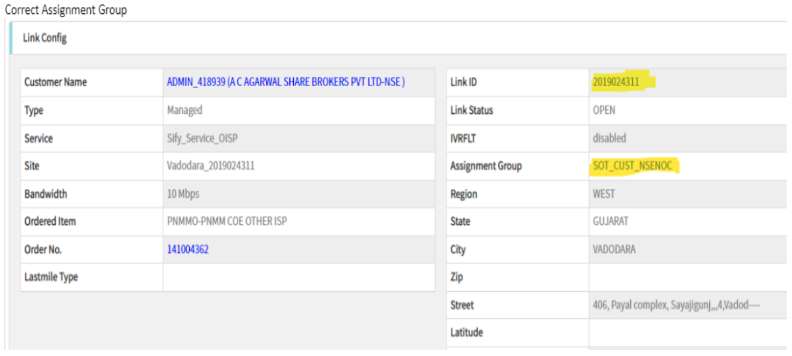
UAT Logs file:
Uptime Minimum 5 hours - A) sh ip bgp sum
Check version - B) sh ver
Check the interface - C) sh int
Check the ping response and CRC error and Utilization - D) sh ip mroute sum
Copy all logs Create a one zip file - E) sh ip pim nei
Upload the file in Aakkash portal - F) ping response
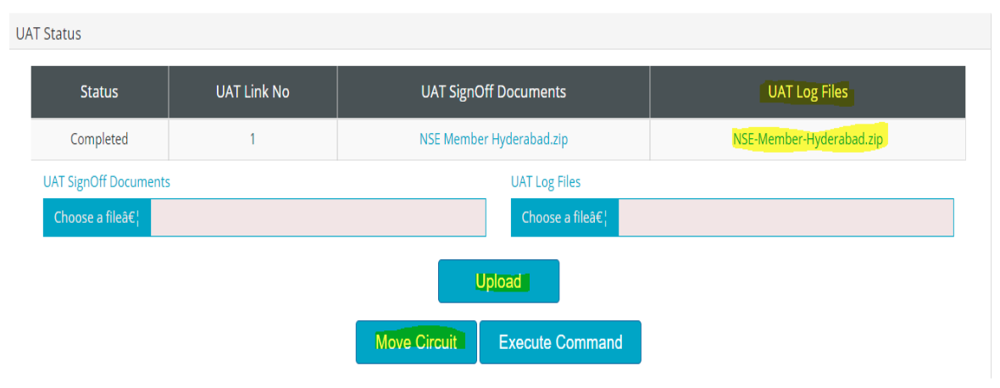
We will get an e-mail from Noc team
Check the BSO name and mention in data sheet
Check the date and time
Check the ACTIVITY name
Check the member name from the Aakash portal
Check the member Sac id from the Aakash portal
Mention To mail customer email id
And NOC team mail id in CC
Send to customers and flag the sent mailbox
After completion of activity, we will get notification from the NOC team
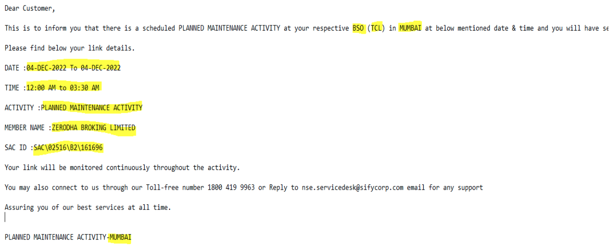
Performance:
This module provides following network performance metrics in graphical view
Member also can take historical reports from predefined dates or from custom date range
Device health :- CPU
Memory
Interface statistics :- Bandwidth utilization
Error
Near Real Time CPU / Memory Utilization summary details can be viewed for all the devices for all sites or for site as shown in the screenshot by clicking on CPU & Memory
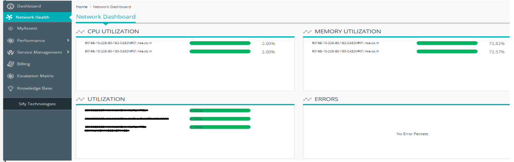
Device health
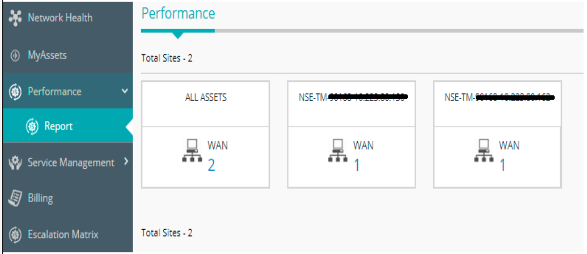
Go to customer portal
Login to portal
Go to main menu
Select Performance
Click on all assets
Select reports
Click on links
Click on link ID
Below generate one day / weekly / monthly reports
Home => Performance Reports => All Sites
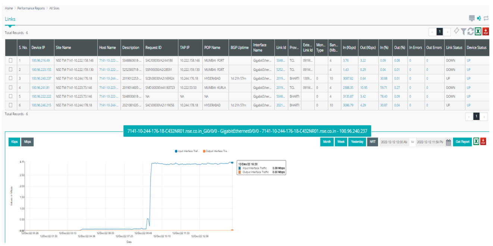
Utilization Reports
If any clarification on any billing related issue:
To Create a new ticket for any clarification on any billing related issue, TDS, refund queries etc
You can select Date and fetch the respective Month/Quarter report by clicking on calendar ICON
Reports can be exported into PDF and Excel formats by clicking on ICON
Click on raise a New ticket
After clicking above option following screen will open and you can feed relevant information and submit
Select your link ID and select Complaint on Billing Option
After completing above process new ticket would be raised for your billing query
Our Billing department will update ticket within 48 hours
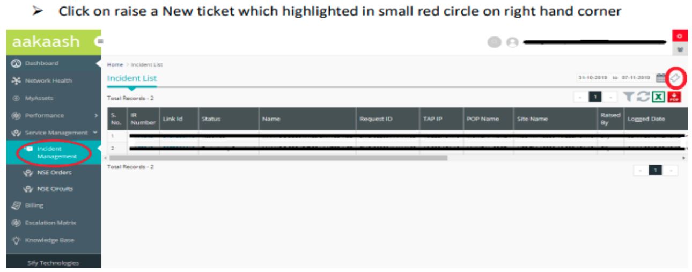
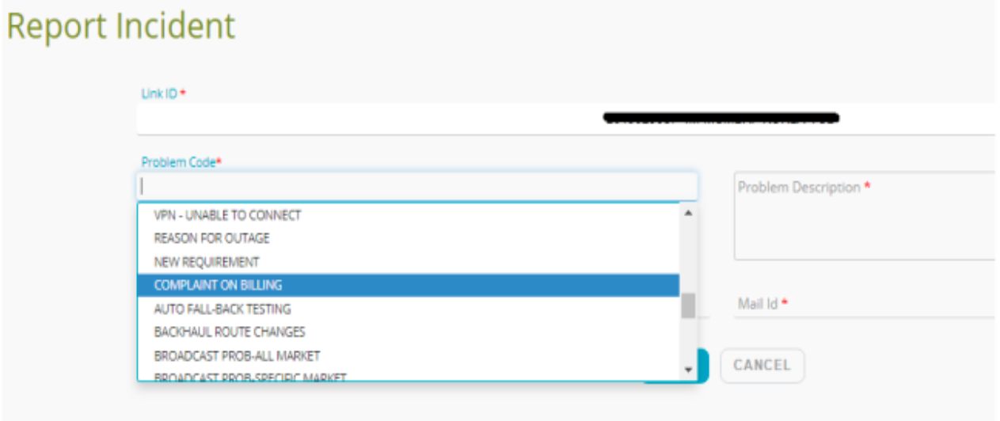
Go to customer portal
Login to portal
Go to main menu
Select billing option
You can select Date and fetch the respective Month/Quarter report by clicking on calendar ICON
Reports can be exported into PDF and Excel formats by clicking on ICON
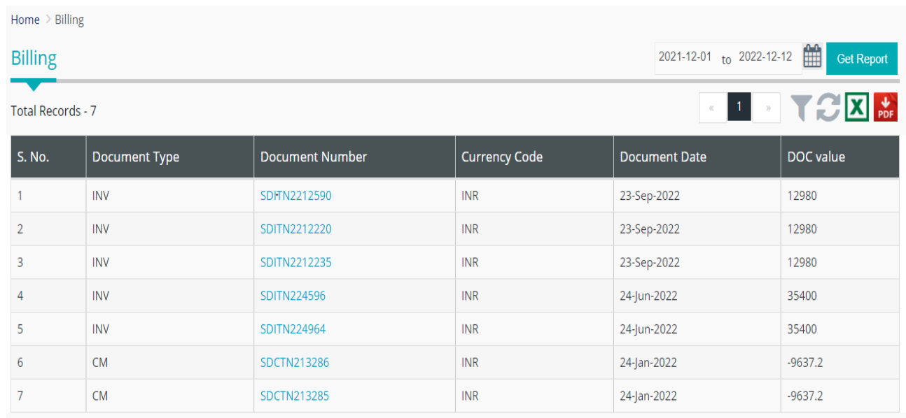
Mgmt ip or Loop back ip - CA spectrum
Go to CA spectrum
Login with username and password
Select Tools
Click on utilities to discovery console
And select Landscape {nse-dc-ca-ss-02(0X200000)}
Go to global configuration
Select MEMBER-DEVICE-DISCOVERY
IP/ hostname Add loopback IP
Select SNMP3 version
Click on discover
It will be having 5 Steps. All modules will get green colour then the Ip has been discovered